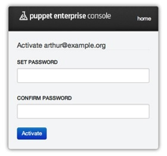
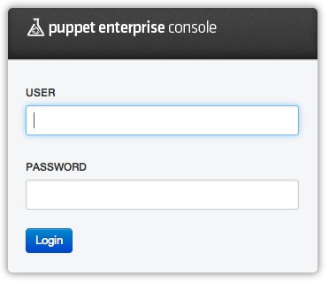
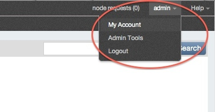
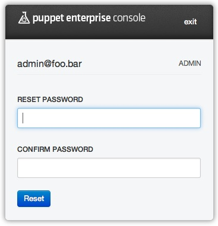
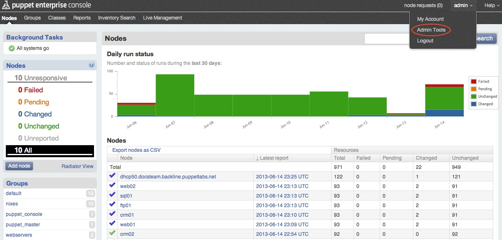
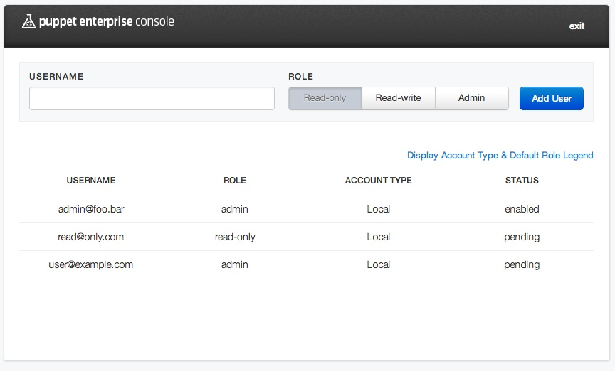
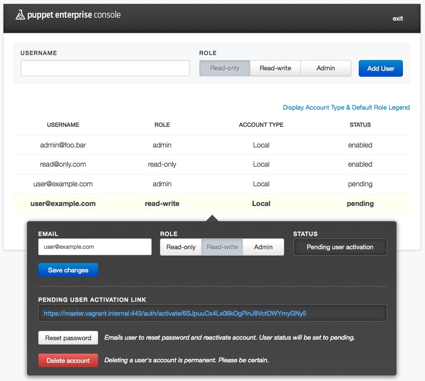
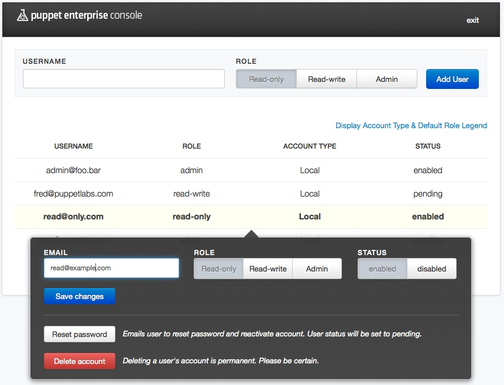
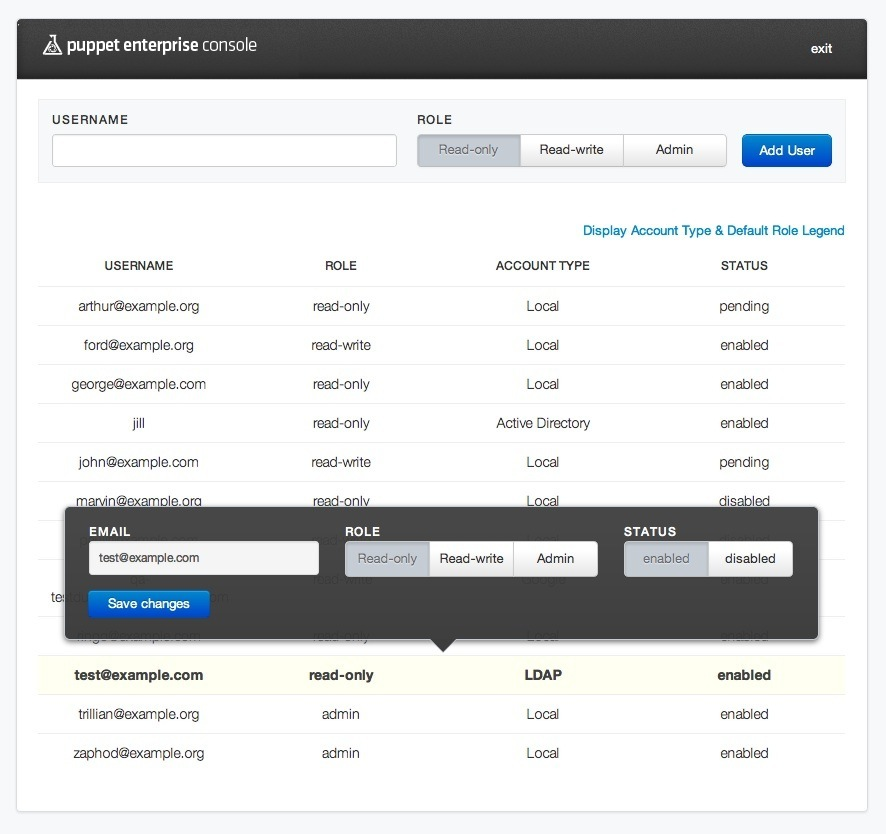
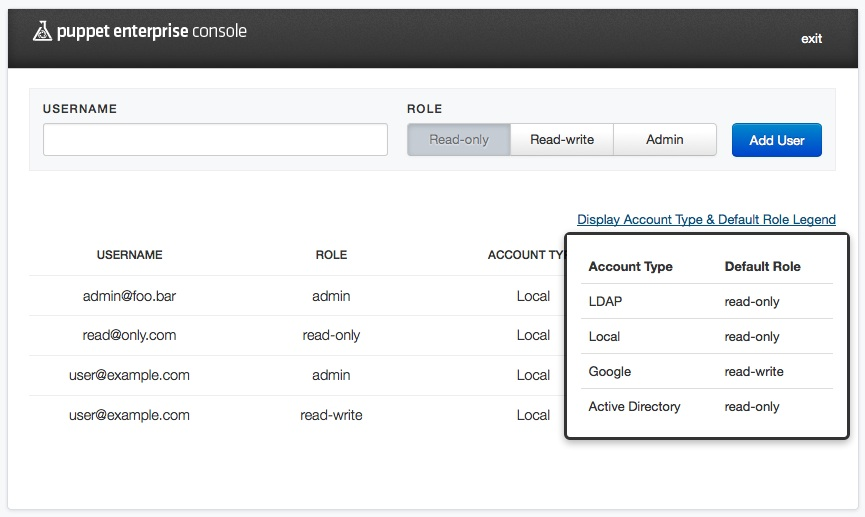

Managing Console Users
The Puppet Enterprise console supports individual user management, access and authentication. Instead of a single, shared username and password authenticated over HTTP with SSL, the console allows secure individual user accounts with different access privileges. Specifically, user accounts allow the assignment of one of three access levels: read-only, read-write, or admin.
Console users can also be managed using external, third-party authentication services such as LDAP, Active Directory or Google Accounts.
Following standard security practices, user passwords are hashed with a salt and then stored in a database separated from other console data. Authentication is built on CAS, an industry standard, single sign-on protocol.
Note: By default, CAS authentication for the console runs over port 443. If your console needs to access CAS on a different host/port, you can configure that in /etc/puppetlabs/console-auth/cas_client_config_yml.
User Access and Privileges
Depending on the access privileges assigned to them, users will be able to see and access different parts of the console:
Read-Only Users can only view information on the console, but cannot perform any actions. In particular, read-only users are restricted from:
- accessing the Control Puppet tab in live management
- accessing the Advanced Tasks tab in live management
- adding, editing, or removing nodes, groups, or classes
Read-Write Users have access to all parts of the console EXCEPT the user-management interface. Read-write users can interact with the console and use it to perform node management tasks.
Admin Users have unrestricted access to all parts of the console, including the user-management interface. Through this interface, admin users can:
- add a new user
- delete a user
- change a user’s role
- re-enable a disabled user
- disable an enabled user
- edit a user’s email
- prompt a change to the user’s password
There is one exception to this: admin users cannot disable, delete or change the privileges of their own accounts. Only another admin user can make these changes.
Anonymous Users In addition to authenticated, per-user access, the console can also be configured to allow anonymous, read-only access. When so configured, the console can be viewed by anyone with a web browser who can access the site URL. For instructions on how to do this, visit the console configuration page.
Managing Accounts and Users Internally
Signing Up
In order to sign up as a console user at any access level, an account must be created for you by an admin. Upon account creation, you will receive an email containing an activation link. You must follow this link in order to set your password and activate your account. The link will take you to a screen where you can enter and confirm your password, thereby completing account activation. Once you have completed activation you will be taken to the Login screen where you can enter your new credentials.

Logging In
You will encounter the login screen whenever you try to access a protected part of the console. The screen will ask for your email address and password. After successfully authenticating, you will be taken to the part of the console you were trying to access.
When you’re done working in the console, choose Logout from the user account menu. Note that you will be logged out automatically after 48 hours.

Note: User authentication services rely on a PostgreSQL database. If this database is restarted for any reason, you may get an error message when trying to log in or out. See known issues for more information.
Viewing Your User Account
To view your user information, access the user account menu by clicking on your username (the first part of your email address) at the top right of the navigation bar.

Choose My account to open a page where you can see your username/email and your user access level (admin, read-write or read-only) and text boxes for changing your password.

User Administration Tools
Users with admin level access can view information about users and manage their access, including adding and deleting users as needed. Admin level users will see an additional menu choice in the user account menu: Admin Tools. Users with read-write or read-only accounts will NOT see the Admin Tools menu item.

Viewing Users and Settings
Selecting Admin Tools will open a screen showing a list of users by email address, their access role and status. Note that users who have not yet activated their accounts by responding to the activation email and setting a password will show a status of pending.

Click on a user’s row to open a pop-up pane with information about that user. The pop-up will show the user’s name/email, their current role, their status and other information. If the user has not yet validated their account, you will also see the link that was generated and included in the validation email. Note that if there is an SMTP issue and the email fails to send, you can manually send this link to the user.

Modifying User Settings
To modify the settings for a given user, click on the user’s row to open the pop-up pane. In this pane, you can change their role and their email address or reset their password. Don’t forget to click the Save changes button after making your edits.
Note that resetting a password or changing an email address will change that user’s status back to Pending, which will send them another validation email and require them to complete the validation and password setting process again.
For users who have completed the validation process, you can also enable or disable a user’s account. Disabling the account will prevent that user from accessing the console, but will not remove them from the users database.

Adding/Deleting Users
To add a new user, open the user admin screen by choosing Admin Tools in the user menu. Enter the user’s email address and their desired role, then click the “Add user” button. The user will be added to the list with a pending status and an activation email will be automatically sent to them.
To delete an existing user (including pending users), click on the user’s name in the list and then click the Delete account button. Note that deleting a user cannot be undone, so be sure this is what you want to do before proceeding.
Working with Users From the Command Line
Several actions related to console users can be done from the command line using rake tasks. This can be useful for things like automating user creation/deletion or importing large numbers of users from an external source all at once. All of these tasks should be run on the console server node.
Note that console_auth rake tasks that list, add or remove users must be run using the bundle exec command. For example,
cd /opt/puppet/share/puppet-dashboard
sudo /opt/puppet/bin/bundle exec rake -f /opt/puppet/share/console-auth/Rakefile db:users:list
Console_auth rake tasks will add their actions to the console_auth log, located by default at /var/log/pe-console-auth/auth.log.
Adding or Modifying Users
The db:create_user rake task is used to add users. The command is issued as follows:
cd /opt/puppet/share/puppet-dashboard
sudo /opt/puppet/bin/bundle exec rake -f /opt/puppet/share/console-auth/Rakefile db:create_user USERNAME="<email address>" PASSWORD="<password>" ROLE="< Admin | Read-Only | Read-Write >"
If you specify a user that already exists, the same command can be used to change attributes for that user, e.g. to reset a password or elevate/demote privileges.
Deleting Users
The db:users:remove task is used to delete users. The command is issued as follows:
cd /opt/puppet/share/puppet-dashboard
sudo /opt/puppet/bin/bundle exec rake -f /opt/puppet/share/console-auth/Rakefile db:users:remove[<email address>]
Viewing Users
To print a list of existing users to the screen use the db:users:list task as follows:
cd /opt/puppet/share/puppet-dashboard
sudo /opt/puppet/bin/bundle exec rake -f /opt/puppet/share/console-auth/Rakefile db:users:list
Using Third-Party Authentication Services
User access can be managed with external, third-party authentication services. The following external services are supported:
- LDAP
- Active Directory (AD)
- Google accounts
Note: To use a third-party authentication system, you must configure two files on the console server.
Third-party services are only used for authenticating users; the console’s RBAC still manages each user’s privileges. If a user has never logged in before, they are assigned a default role. (This role can be configured. See the cas_client_config.yml section of the config instructions for details.) External users’ access privileges are managed in the same manner as internal users, via the console’s user administration interface.
The account interface for an externally authenticated user differs slightly from internal users in that external users do not have UI for changing their passwords or deleting accounts.

There will also be additional text on the user administration page which indicates the authentication service (“Account Type”) being used for a given user and a link to a legend that lists the external authentication services and the default access privileges given to users of a given service.

Lastly, note that built-in auth accounts use the email address specified at the end (e.g. “a.user@example.com”), whereas AD/LDAP accounts are generally accessed using just the username (e..g “a.user”), although this may vary in your specific organization’s implementation.